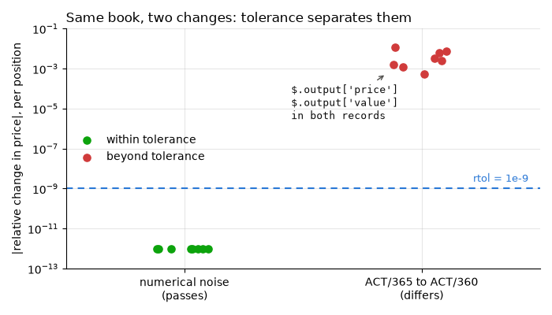

Note
Go to the end to download the full example code.
replay, replay_tests : a pricing pipeline, recorded, changed, replayed¶
The earlier pages take one feature at a time. This one puts them together the way a real suite would: a small pricing pipeline - a numpy kernel and a polars valuation table - recorded once, then replayed after each of three changes: numerical noise that must pass, a real regression that must fail, and a deliberate change that is accepted by re-recording.
It needs polars as well as numpy.
Setup: where records go¶
The code under test reads its store from the REGRESSION_RECORDS_STORE environment
variable when it is imported, so the variable is set first
(record_func : recording a first call says why).
import os
import tempfile
from pathlib import Path
# In a project: REGRESSION_RECORDS_STORE=tests/regression_data in a .env file, loaded
# with python-dotenv's load_dotenv(). Here: a fresh temporary directory, empty each run.
STORE = Path(tempfile.mkdtemp(prefix="regression-records-"))
os.environ["REGRESSION_RECORDS_STORE"] = str(STORE)
print("store:", STORE)
store: /tmp/regression-records-41a5wvgk
Setup: the code under test¶
Replay imports a recorded function by module and name, so the code under test lives in
a module, revaluation, imported from regression_records._examples - support
code that ships with the package so that a page can import real code rather than
define it in a cell (record_func : recording a first call says
more). In your project, this is your own package. Its source, printed below:
A Black-Scholes kernel and the function that applies it to a book. Conventions: spot
and strike in currency, vol annualised, rate continuously compounded, and
expiry converted to a year fraction with DAYS_PER_YEAR - which is the thing a
later section changes. NOISE stands in for a BLAS or numpy upgrade.
record_scenarios is the run that records: one book valued under two markets.
import inspect
import subprocess
import sys
from contextlib import contextmanager
from regression_records._examples import revaluation
print(inspect.getsource(revaluation))
"""A Black-Scholes book revaluation, for the gallery page ``13_pricing_pipeline``."""
from __future__ import annotations
import math
import os
import numpy as np
import polars as pl
from regression_records import record_func
# Where records go is configuration, set by whoever runs this code; never set here.
STORE = os.environ["REGRESSION_RECORDS_STORE"]
DAYS_PER_YEAR = 365.0 # ACT/365
NOISE = 0.0 # stands in for a BLAS or numpy upgrade
# erfc, not 1 + erf: the latter cancels to 0 in the left tail, deep out of the money.
_normal_cdf = np.vectorize(lambda x: 0.5 * math.erfc(-x / math.sqrt(2.0)))
def black_scholes(spot, strike, vol, rate, tau, is_call):
"""Return European option prices; every argument broadcasts, ``tau`` is in years."""
d1 = (np.log(spot / strike) + (rate + 0.5 * vol**2) * tau) / (vol * np.sqrt(tau))
d2 = d1 - vol * np.sqrt(tau)
call = spot * _normal_cdf(d1) - strike * np.exp(-rate * tau) * _normal_cdf(d2)
put = call - spot + strike * np.exp(-rate * tau) # put-call parity
return np.where(is_call, call, put) * (1.0 + NOISE)
@record_func(STORE, tags={"suite": "revaluation"})
def value_book(
book: pl.DataFrame, spot: float, vol: float, rate: float
) -> pl.DataFrame:
"""Return ``book`` with a per-contract ``price`` and a position ``value``."""
tau = book["days_to_expiry"].to_numpy() / DAYS_PER_YEAR
price = black_scholes(
spot, book["strike"].to_numpy(), vol, rate, tau, book["is_call"].to_numpy()
)
return book.with_columns(
price=pl.Series(price), value=pl.Series(price) * pl.col("quantity")
)
BOOK = pl.DataFrame(
{
"trade_id": ["T1", "T2", "T3", "T4"],
"strike": [90.0, 100.0, 100.0, 110.0],
"days_to_expiry": [30, 90, 90, 180],
"is_call": [True, True, False, False],
"quantity": [10, -5, 20, 15],
}
)
MARKETS = [
{"spot": 100.0, "vol": 0.2, "rate": 0.03},
{"spot": 95.0, "vol": 0.25, "rate": 0.03},
]
def record_scenarios() -> list[pl.DataFrame]:
"""Value ``BOOK`` in each market scenario, and return the valuations."""
return [value_book(BOOK, **market) for market in MARKETS]
Recording¶
Recording is off unless switched on; this page switches it on for the whole script. Then run the pipeline on the scenarios worth pinning. The book is a DataFrame argument, so it goes to a parquet side file, and the valuation to another. Two market scenarios are two records.
import numpy as np
from regression_records import RecordStore, ToleranceConfig, enable, recording, replay
enable()
valuations = revaluation.record_scenarios()
print(revaluation.BOOK)
print(valuations[0])
assert len(list(STORE.rglob("rec-*.json"))) == 2
print("side files:", sorted(p.suffix for p in STORE.rglob("data/*")))
shape: (4, 5)
┌──────────┬────────┬────────────────┬─────────┬──────────┐
│ trade_id ┆ strike ┆ days_to_expiry ┆ is_call ┆ quantity │
│ --- ┆ --- ┆ --- ┆ --- ┆ --- │
│ str ┆ f64 ┆ i64 ┆ bool ┆ i64 │
╞══════════╪════════╪════════════════╪═════════╪══════════╡
│ T1 ┆ 90.0 ┆ 30 ┆ true ┆ 10 │
│ T2 ┆ 100.0 ┆ 90 ┆ true ┆ -5 │
│ T3 ┆ 100.0 ┆ 90 ┆ false ┆ 20 │
│ T4 ┆ 110.0 ┆ 180 ┆ false ┆ 15 │
└──────────┴────────┴────────────────┴─────────┴──────────┘
shape: (4, 7)
┌──────────┬────────┬────────────────┬─────────┬──────────┬───────────┬────────────┐
│ trade_id ┆ strike ┆ days_to_expiry ┆ is_call ┆ quantity ┆ price ┆ value │
│ --- ┆ --- ┆ --- ┆ --- ┆ --- ┆ --- ┆ --- │
│ str ┆ f64 ┆ i64 ┆ bool ┆ i64 ┆ f64 ┆ f64 │
╞══════════╪════════╪════════════════╪═════════╪══════════╪═══════════╪════════════╡
│ T1 ┆ 90.0 ┆ 30 ┆ true ┆ 10 ┆ 10.284787 ┆ 102.847872 │
│ T2 ┆ 100.0 ┆ 90 ┆ true ┆ -5 ┆ 4.325212 ┆ -21.62606 │
│ T3 ┆ 100.0 ┆ 90 ┆ false ┆ 20 ┆ 3.588215 ┆ 71.764304 │
│ T4 ┆ 110.0 ┆ 180 ┆ false ┆ 15 ┆ 10.956459 ┆ 164.34689 │
└──────────┴────────┴────────────────┴─────────┴──────────┴───────────┴────────────┘
side files: ['.parquet', '.parquet', '.parquet']
The tolerance¶
Tolerance is decided at replay, not at recording. Prices are floats and will not reproduce bit for bit across machines, so they get a relative tolerance. Quantities and days are integers, which always compare exactly; identifiers are strings, which have no tolerance at all.
A position in a deep out-of-the-money option is worth almost nothing, and a relative
tolerance shrinks with it. The path_overrides entry gives the value column an
absolute floor of a millionth of a currency unit; it inherits rtol=1e-9 from the
config above it, since an override changes only the fields it is given.
RTOL = 1e-9
TOLERANCE = ToleranceConfig(
rtol=RTOL, path_overrides={"$.output['value']": ToleranceConfig(atol=1e-6)}
)
report = replay(STORE, tolerance=TOLERANCE)
print(report.summary())
assert report.passed
replayed 2 record(s) from /tmp/regression-records-41a5wvgk: 2 passed
Each of the changes below is made by setting a module-level constant of
revaluation - standing in for an edit to the file - and undone afterwards whatever
happens. Under each change the page also values the book itself, with recording off,
to plot what replay compared.
@contextmanager
def changed(**settings):
"""Temporarily set module-level constants of ``revaluation``."""
saved = {name: getattr(revaluation, name) for name in settings}
for name, value in settings.items():
setattr(revaluation, name, value)
try:
yield
finally:
for name, value in saved.items():
setattr(revaluation, name, value)
def relative_price_change() -> np.ndarray:
"""Return each position's relative price change against the recorded valuations."""
with recording(False):
now = revaluation.record_scenarios()
return np.concatenate(
[
np.abs(new["price"].to_numpy() / old["price"].to_numpy() - 1)
for new, old in zip(now, valuations, strict=True)
]
)
Numerical noise¶
Upgrade numpy, move to another CPU, and the last few bits of a float change. That is
not a regression, and rtol=1e-9 absorbs it: this replay perturbs every price by
one part in 10^12 and still passes.
with changed(NOISE=1e-12):
report = replay(STORE, tolerance=TOLERANCE)
noise = relative_price_change()
print(report.summary())
assert report.passed
replayed 2 record(s) from /tmp/regression-records-41a5wvgk: 2 passed
A real regression¶
Someone “tidies” the day count to ACT/360. Nothing crashes and the prices look
plausible. Replay names the columns that moved and leaves alone the ones that did
not - quantity and days_to_expiry are untouched, so they are not in the
report.
with changed(DAYS_PER_YEAR=360.0):
report = replay(STORE, tolerance=TOLERANCE)
act360 = relative_price_change()
print(report.counts())
print(report.failures[0].comparison.summary())
paths = {d.path for case in report.failures for d in case.comparison.diffs}
assert report.counts()["differs"] == 2
assert paths == {"$.output['price']", "$.output['value']"}
{'passed': 0, 'differs': 2, 'raised': 0, 'not_importable': 0, 'not_replayable': 0, 'not_loadable': 0}
comparison failed with 2 diff(s):
at "$.output['price']" (value_mismatch): 4 of 4 element(s) differ beyond tolerance at index/indices: 0, 1, 2, 3
at "$.output['value']" (value_mismatch): 4 of 4 element(s) differ beyond tolerance at index/indices: 0, 1, 2, 3
Side by side, the two changes are eight orders of magnitude apart, and the tolerance
sits between them: every position moved under both, but only the regression moved
beyond rtol.
import matplotlib.pyplot as plt
assert noise.max() < RTOL < act360.min()
fig, ax = plt.subplots(figsize=(7.0, 4.0))
rng = np.random.default_rng(0)
for x, moves in enumerate([noise, act360]):
beyond = moves > RTOL
jitter = x + rng.uniform(-0.12, 0.12, moves.size)
ax.scatter(
jitter[~beyond],
moves[~beyond],
s=44,
color="#0ca30c",
zorder=3,
label="within tolerance" if x == 0 else None,
)
ax.scatter(
jitter[beyond],
moves[beyond],
s=44,
color="#d03b3b",
zorder=3,
label="beyond tolerance" if x == 1 else None,
)
ax.axhline(RTOL, color="#2a78d6", lw=1.5, ls=(0, (4, 3)))
ax.text(1.45, RTOL * 2.2, "rtol = 1e-9", color="#2a78d6", ha="right", fontsize=9)
ax.annotate(
"$.output['price']\n$.output['value']\nin both records",
xy=(0.85, np.min(act360)),
xytext=(0.45, 3e-6),
family="monospace",
fontsize=9,
color="#0b0b0b",
arrowprops={"arrowstyle": "->", "color": "#52514e"},
)
ax.set_yscale("log")
ax.set_xticks([0, 1], ["numerical noise\n(passes)", "ACT/365 to ACT/360\n(differs)"])
ax.set_xlim(-0.5, 1.5)
ax.set_ylim(1e-13, 1e-1)
ax.set_ylabel("|relative change in price|, per position")
ax.set_title("Same book, two changes: tolerance separates them", loc="left")
ax.legend(loc="center left")
fig.tight_layout()

code_drift is false: value_book’s own source is unchanged, so only the values
could have caught this.
assert not any(case.code_drift for case in report.cases)
Accepting a deliberate change¶
Suppose ACT/360 was the right call after all. Accepting it is three steps: record the scenarios again, delete the old records, and prune the side files they leave.
Records are never replaced, and a process records each call once, so re-recording
happens in a fresh process, as REGRESSION_RECORDS=1 python run_pipeline.py
would (RecordStore, replay : re-recording after an intended change has the
details). It inherits REGRESSION_RECORDS_STORE, so the new records land beside
the old ones.
result = subprocess.run(
[
sys.executable,
"-c",
"from regression_records._examples import revaluation\n"
"revaluation.DAYS_PER_YEAR = 360.0 # the edited revaluation.py\n"
"revaluation.record_scenarios()\n",
],
env={**os.environ, "REGRESSION_RECORDS": "1"},
capture_output=True,
text=True,
timeout=120,
check=True,
)
with changed(DAYS_PER_YEAR=360.0):
report = replay(STORE, tolerance=TOLERANCE)
print(report.counts())
assert report.counts()["passed"] == 2 and report.counts()["differs"] == 2
{'passed': 2, 'differs': 2, 'raised': 0, 'not_importable': 0, 'not_replayable': 0, 'not_loadable': 0}
The old records now fail, as they should: they and the code disagree. Deleting them is
the deliberate act, done by hand, since records are never deleted for you; prune
then clears the side files no record refers to any more.
In a real repository the store is committed, so git diff on it is the review: the
old records out, the new ones in.
for case in report.failures:
(STORE / case.record_path).unlink()
pruned = RecordStore(STORE).prune(dry_run=False)
print("pruned:", [p.name for p in pruned])
with changed(DAYS_PER_YEAR=360.0):
report = replay(STORE, tolerance=TOLERANCE)
print(report.summary())
assert report.passed and len(report.cases) == 2
pruned: ['df-95d1fd191b38e0d29171a9cda85cfbde.parquet', 'df-f11bafae4ab785c7ee89fcd2fdba98f1.parquet']
replayed 2 record(s) from /tmp/regression-records-41a5wvgk: 2 passed
A stale record left in the store keeps failing replay, which is accurate, until someone decides which of it and the code is right.
In a test file¶
In a suite the replay is one line. replay_tests
(replay_tests : one pytest test per record) makes each
record its own pytest test, so a failure names the scenario that moved:
# tests/test_regressions.py
from regression_records import ToleranceConfig, replay_tests
test_regressions = replay_tests(
"tests/regression_data",
tolerance_overrides={
"mylib.revaluation:*": ToleranceConfig(
rtol=1e-9,
path_overrides={"$.output['value']": ToleranceConfig(atol=1e-6)},
)
},
)
Commit tests/regression_data/ alongside it, and a pull request that moves a price
fails with the columns that moved.
Next: replay_tests : one pytest test per record turns a store into one pytest test per record.
Total running time of the script: (0 minutes 0.760 seconds)